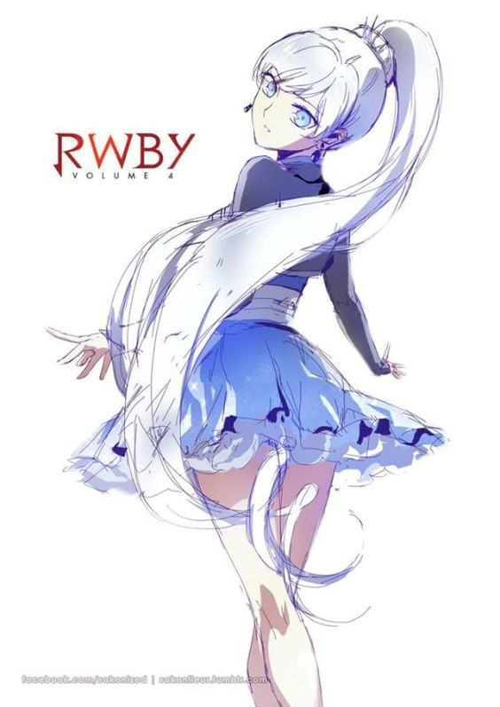
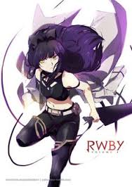
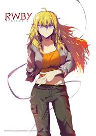

Ruby Rose

Ruby Rose is the main protagonist of RWBY. Ruby's weapon of choice is her High-Caliber Sniper-Scythe (HCSS) known as Crescent Rose.[3] She first appeared in the "Red" Trailer visiting the grave of her deceased mother, Summer Rose. After an invitation from Headmaster Ozpin following an altercation with Roman Torchwick, Ruby attends Beacon Academy to become a Huntress. She becomes the leader of Team RWBY, consisting of Weiss Schnee, Blake Belladonna and her half-sister, Yang Xiao Long
Read more:Wikia
Weiss Schnee
Weiss Schnee (pronounced Why-ss Sh-nee)[1] is one of the main protagonists of RWBY. Her weapon of choice is a Multi Action Dust Rapier (MADR) named Myrtenaster. Former heiress of the vastly influential Schnee Dust Company, Weiss made her first appearance in the "White" Trailer. After enrolling in Beacon Academy against the wishes of her father, she becomes a member of Team RWBY alongside Ruby Rose, Blake Belladonna and Yang Xiao Long.
Read more:Wikia
Blake Belladonna
Blake Belladonna is one of the main protagonists of RWBY. Her weapon of choice is a Variant Ballistic Chain Scythe (VBCS)[2] named Gambol Shroud. She first appeared in the "Black" Trailer alongside Adam Taurus, her then-boyfriend,[3] partner, and mentor[4] in the White Fang, a Faunus terrorist group. After leaving the organization, Blake enrolls in Beacon Academy, where she becomes a member of Team RWBY alongside Ruby Rose, Weiss Schnee and Yang Xiao Long.
Read more:Wikia
Yang Xiao Long
Yang Xiao Long is one of the main protagonists of RWBY. Her weapon of choice was a pair of Dual Ranged Shot Gauntlets, Ember Celica. She made her first appearance in the "Yellow" Trailer, searching for clues regarding the whereabouts of her mother, who left her when she was very young. At Beacon Academy, Yang becomes a member of Team RWBY alongside Weiss Schnee, Blake Belladonna and her younger half-sister, Ruby Rose
Source:Wikia